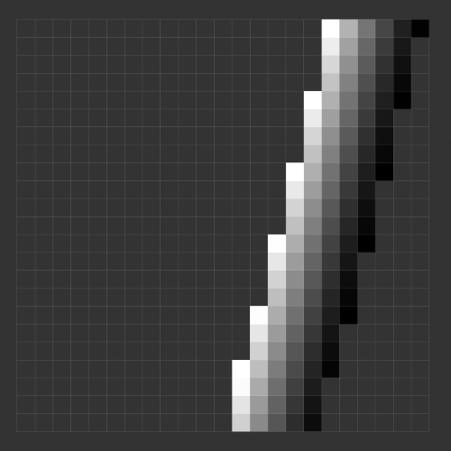
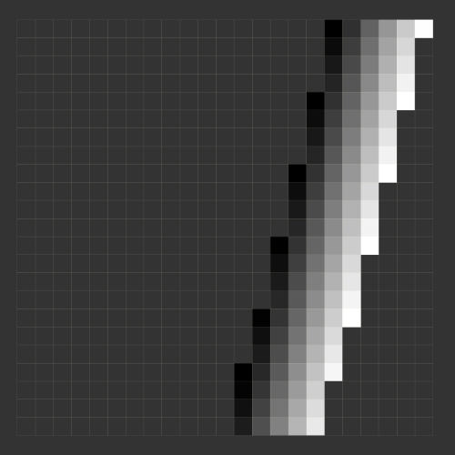
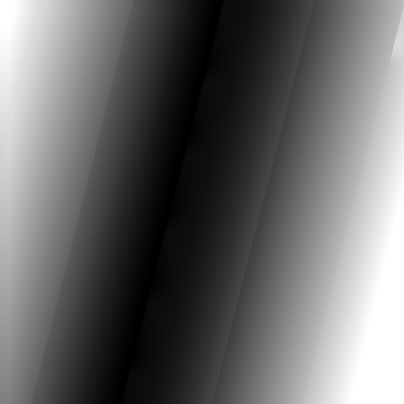

|
|
EOMasters Toolbox | |
The solar and view geometry angles for Sentinel-2 are provided on a coarse grid (23x23 samples) at a 5000-meter
resolution. When these angles at the resolution of the reflectance bands are needed they must be scaled up. For the
sun zenith and azimuth angles this is straight forward. Unfortunately this is not the case for the satellite view
angles.
The view zenith and azimuth angles are given for each sensor detector and the Sentinel-2 images are taken
by up to seven detectors. This means that the detector footprints need to be taken into account when up scaling the
angle grids and interpolation of the values should only be done within the bounds of the footprint.
This
implementation aims to resolve this issue like the S2 Resample but only generates the up-scaled geometry bands. The
benefit is that this implementation is faster, even when combined with the generic resampling operation.
As said before, the scaling of the sun zenith and azimuth angles is straight forward. The processor generates one image for the three resolutions. The coarse grid is simply scaled and bi-linear interpolated to the respective resolution and afterward cropped to scene image bounds. For the 20m resolution, the 23x23 grid is scaled up to 5750x5750 pixel image. This image is then cropped to the area [0, 0, 5490, 5490], because the upper-left corners of the grid and the scene images are aligned. For the other resolutions it is done accordingly.
The view geometries are treated as follows. First, the values in the coarse grids for each band detector are extrapolated. In the next step the result is up-scaled to the band resolution in the same way as it is done for the solar geometry angels. This result is masked using the corresponding detector footprint. As final step the values across the detectors are combined into one image.
The result is demonstrated at the example of band B4 and the detector 8.
| Angle |
Source B4/Detector 8
|
Result B4
|
| Azimuth |  |
|
| Zenith |  |
 |
This implementation supports the standard Sentinel-2 L2A data provided by Copernicus. Theoretically this can also support L2A data from Theia in the Muscate format. Unfortunately it does not provide correct detector footprints for the surface reflectance bands. This issue has already been reported.
The input data must not be cropped or under-sampled beforehand. This would lead to incorrectly calculated angles. Also, the band names should not be changed. But, it is possible to remove bands from the source product. Before the processing starts a validation is performed and processing is refused if the input does not meet the requirements.
The S2 L2A product provides the B1 reflectance data at an up-sampled resolution of 20m and the specific masks, like detector footprints, still at the native resolution of 60m. Due to this incompatibility and the reason that SNAP is not correcting, the view geometry information for B1 is not usable. You might want to read the discussions I had about this issue.